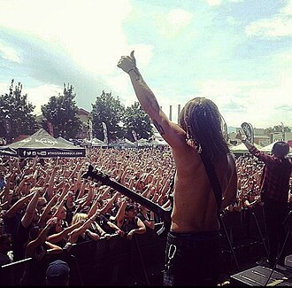

Get Scared
Get Scared is an American post-hardcore band from Layton, Utah, formed in 2008. After their formation they released their first EP Cheap Tricks and Theatrics in 2009. A self-titled EP followed several months later in 2010. The band's debut studio album, Best Kind of Mess, was released in July 2011. Following Nicholas Matthews' first departure to join Blacklisted Me, the band released Cheap Tricks and Theatrics B-Sides in December 2011 without any previous announcements. Matthews was replaced by Joel Faviere near the end of 2011. The band's third EP and first with Faviere, Built for Blame, Laced With Shame, was released in 2012; Faviere was kicked out a few months after the EP's release when Matthews rejoined the band. Following Matthews' comeback, the band signed with Fearless Records and released their second full-length album, Everyone's Out to Get Me, in 2013. The band's third studio album, Demons, was released in 2015, and marked a departure from the band's post-hardcore sound featured on Built for Blame and Everyone's Out to Get Me in favor of a more metalcore-like sound. Their fourth and final album, The Dead Days, was released in 2019 amidst a hiatus; it was later stated by vocalist Nicholas Matthews that the band had broken up due to multiple issues between the band members. Though the band announced a reunion in 2022, plans initially seemed to fall through; however in 2025 they stated that they had been writing new music since then.
Complete Discography & Tracklists (4)